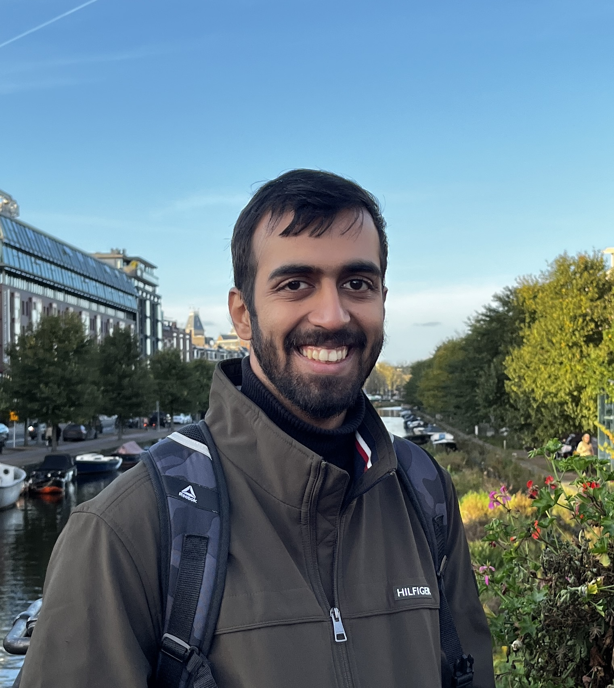

Certifications
Fundamentals of Agents - Hugging Face


Hi, I'm Anirudh Parameswaran! I'm a full-stack data scientist. I've built KPI Sensitivity Playbooks for Delhivery, India's largest logistics firm and designed engagement strategies for Hitwicket, a mobile gaming app. I have deep expertise in Python, SQL, and the AWS stack. Now, I'm diving deep into the theoretical side, pursuing my M.S. in Data Science at Technische Universität Dortmund and exploring advanced topics like Simulation Based studies and building Agent-based models and applications. I'm not afraid to get my hands dirty, whether it's debugging a Databricks pipeline or training a PyTorch model. My goal is simple: to turn complex, messy data into clear and simple business outcomes.
Delhivery is India’s largest logistics and supply chain companies, handling e-commerce and enterprise shipments across 18,000+ pin codes.
I started here as a Product Analyst working on majorly first mile and last mile processes. Eventually my role expanded to performing analyses on the entire logistics cycle. In 2024 I was promoted to Senior Analyst in the Business Intelligence team where I was building KPI models using mainly regression algorithms and understanding correlation and causation patterns between KPIs.
Technologies used: Python, SQL, DataBricks, AWS (QuickSight & S3), Microsoft Excel, Git.
Octathorpe is the company behind Hitwicket, a mobile strategy game that was featured by Tim Cook for its innovation in the gaming space. I started my stint here as an intern, which then got converted to a full-time position. My role here involved conducting analysis on our user base to discover insights about how they engage with the game.
Technologies used: Python, SQL, Google Analytics.
A comprehensive blog on using BayesFlow for simulation-based inference, covering installation, data preparation, model training, and evaluation.
Technologies used: Python, PyTorch, BayesFlow, Jupyter Notebooks.
PackZilla is a warehouse automation startup tackling the billion-euro problem of inefficient warehouse workflows and underutilized space in trucks and pallets for small and mid-sized logistics operations.
Fundamentals of Agents - Hugging Face
Grade Point Average (GPA): 1,7
Deep Learning, Reinforcement Learning, Applied Bayesian Analysis, Simulation Based Inference, Statistical Network Analysis
Cumulative Grade Point Average (CGPA): 8.62 / 10.0
Data Structures and Algorithms, Machine Learning, Statistics, Computer Networks & Architecture, Operating Systems
🇬🇧 English - Native
🇩🇪 German - A2